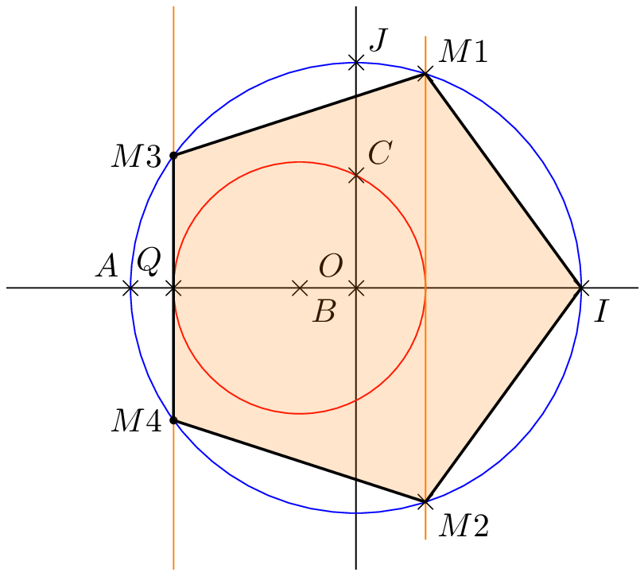
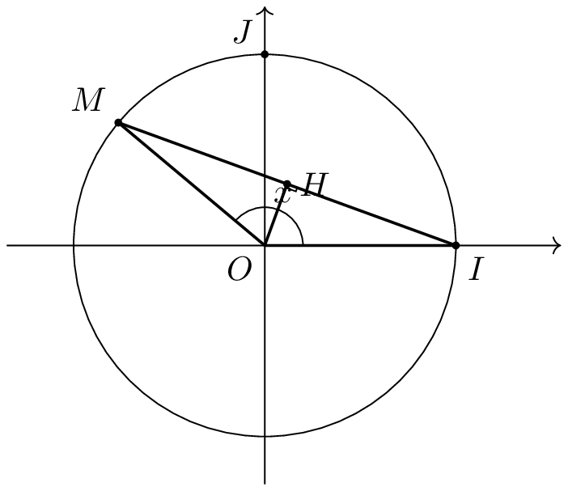
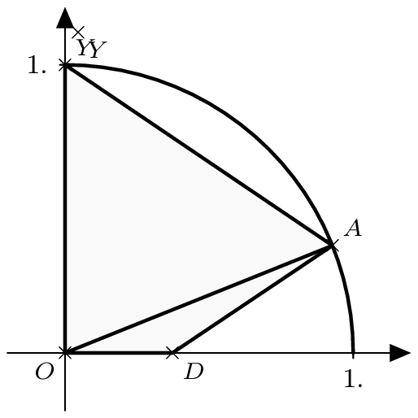
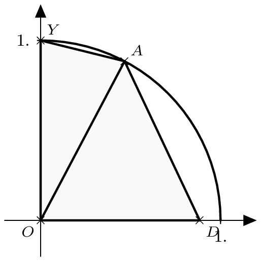
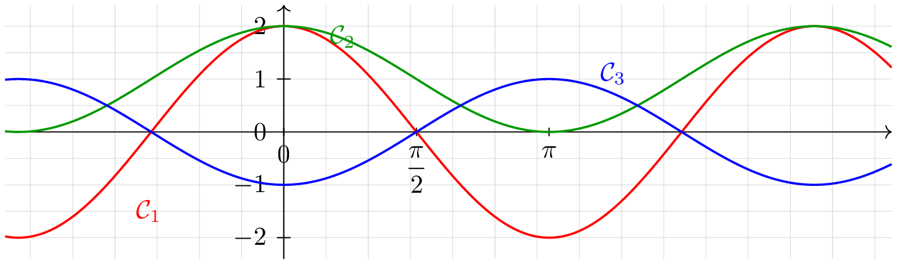
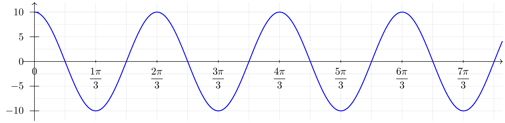
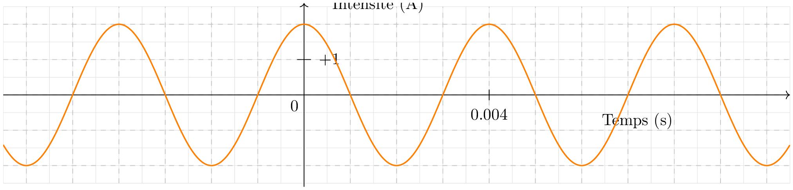

Feuilles d’exercices — Trigonométrie et équations trigonométriques.
Enroulement de la droite graduée, mesure en radianIL f
Exercice 1
Exercice 1 :
Parmi les nombres suivants, indiquer ceux qui ont la même image sur le cercle trigonométrique que \(-\dfrac{\pi}{12}\) :
\[ \dfrac{47\pi}{12}\quad ; \quad-\dfrac{49\pi}{12}\quad ; \quad\dfrac{11\pi}{12}\quad ; \quad-\dfrac{241\pi}{12} \quad ; \quad -\dfrac{37\pi}{12} \]
Exercice 2
Exercice 2 :
Donner la mesure principale de :
\[\dfrac{11\pi}{4} \,;\, -\dfrac{11\pi}{4} \,;\,-\dfrac{13\pi}{4} \,;\, \dfrac{27\pi}{4} \,;\, \dfrac{2005\pi}{4} \,;\, \dfrac{37\pi}{6} \,;\, \dfrac{178\pi}{8}\]
Exercice 3
Exercice 3 :
Reprendre l’exercice précédent, en donnant l’unique réel de l’intervalle \(\left[0\,;\, 2\pi\right[\) ayant le même point-image par enroulement de la droite des réels sur le cercle trigonométrique.
Exercice 4
Exercice 4 :
Écrire un programme Python permettant de déterminer la mesure principale d’un angle en radian.
Exercice 5
Exercice 5 :
Dans chaque cas, colorier sur le cercle trigonométrique l’ensemble des points \(M\) repérés par des réels de :
- \(\left[-\dfrac{\pi}{3}~;~\dfrac{\pi}{4} \right]\)
- \(\left]-\dfrac{\pi}{6}~;~\dfrac{5\pi}{4} \right]\)
- \(\left[-\dfrac{3\pi}{2}~;~-\pi\right]\)
- \(\left[-2\pi~;~-\dfrac{\pi}{2} \right[\)
Exercice 6
Exercice 6 :
Dans chacun des cas suivants, \(M\) et \(N\) sont les points-images des réels indiqués par l’enroulement de la droite des réels sur le cercle trigonométrique.
Dans chacun des cas, déterminer :
- la mesure de l’arc de cercle \(\wideparen{MN}\) parcouru dans le sens trigonométrique ;
- la mesure en radians de l’angle \(\widehat{MON}\) correspondant.
- \(M\) image de \(\dfrac{\pi}{4}\) et \(N\) image de \(\dfrac{4\pi}{3}\).
- \(M\) image de \(-\dfrac{5\pi}{6}\) et \(N\) image de \(\dfrac{7\pi}{3}\).
- \(M\) image de \(-\dfrac{\pi}{3}\) et \(N\) image de \(\dfrac{17\pi}{6}\).
Cosinus et sinus d’un réel
Exercice 7
Exercice 7 :
Déterminer le signe des nombres suivants.
\[\cos\left(\dfrac{\pi}{5}\right) \quad ; \quad \sin\left(\dfrac{5\pi}{8}\right)\quad ; \quad \cos\left(\dfrac{13\pi}{12}\right)\quad ; \quad \sin\left(-\dfrac{\pi}{7}\right)\quad ; \quad \cos\left(\dfrac{31\pi}{9}\right)\]
Exercice 8
Exercice 8 :
Vrai ou faux ? Préciser si les égalités suivantes sont vraies ou fausses. Justifier.
- \(\sin\left(\dfrac{\pi}{3}\right)=\cos\left(-\dfrac{\pi}{6}\right)\)
- \(\cos\left(-\dfrac{\pi}{3}\right)=-\cos\left(\dfrac{\pi}{3}\right)\)
- \(\cos\left(\dfrac{3\pi}{4}\right)=\cos\left(-\dfrac{3\pi}{4}\right)\)
Exercice 9
Exercice 9 :
Donner la valeur exacte des nombres suivants en s’aidant du cercle trigonométrique.
- \(\sin\left(\dfrac{2\pi}{3}\right)\)
- \(\cos\left(-\dfrac{\pi}{4}\right)\)
- \(\sin\left(\dfrac{3\pi}{4}\right)\)
- \(\cos\left(\dfrac{17\pi}{6}\right)\)
- \(\sin\left(-\dfrac{14\pi}{3}\right)\)
Exercice 10
Exercice 10 :
Après avoir placé sur le cercle trigonométrique les différents angles, calculer les nombres suivants :
\[ A=3 \sin \dfrac{7\pi}{6} \cos \dfrac{\pi}{4} - 2 \sin \dfrac{7\pi}{4} \cos \dfrac{5\pi}{3} \et B= \dfrac{2 \sin^2 \dfrac{\pi}{6} - \cos^2 \dfrac{5 \pi}{6} + \cos^2 \dfrac{2\pi}{3}}{\sin^2\dfrac{7\pi}{3}- \cos^2 \dfrac{\pi}{4}} \]
Exercice 11
Exercice 11 :
- Soit \(x \in \left[0;\dfrac{\pi}{2}\right]\) tel que \(\cos x=\dfrac{\sqrt{7}}{4}\). Que vaut \(\sin x\) ?
- Soit \(x \in \left[-\dfrac{\pi}{2};\dfrac{\pi}{2}\right]\) tel que \(\sin x=-0.6\). Que vaut \(\cos x\) ?
- Soit \(x \in \left[\dfrac{\pi}{2};\dfrac{3\pi}{2}\right]\) tel que \(\sin x=\dfrac{4}{5}\). Que vaut \(\cos x\) ?
Exercice 12
Exercice 12 :
La calculatrice étant en mode radian, choisir plusieurs nombres réels \(x\) et calculer l’expression \[ (\cos x+\sin x)^2+(\cos x-\sin x)^2. \]
Quelle conjecture peut-on formuler ?
Démontrer le résultat conjecturé.
- Démontrer que, pour tout réel \(x\), on a : \[ (\cos x)^4-(\sin x)^4=(\cos x)^2-(\sin x)^2. \]
Exercice 13
Exercice 13 :
- Démontrer que \[ \cos \dfrac{\pi}{8} + \cos \dfrac{3\pi}{8} + \cos \dfrac{5\pi}{8} +\cos \dfrac{7\pi}{8} =0 \]
- Déterminer la valeur de \[ B= \cos^2 \dfrac{\pi}{8} + \cos^2 \dfrac{3\pi}{8} + \cos^2 \dfrac{5\pi}{8} +\cos^2 \dfrac{7\pi}{8} \]
- Exprimer en fonction de \(\cos x\) et/ou \(\sin x\), \[ C=\cos x + \cos \left(x+\dfrac{\pi}{2} \right) + 2 \sin x + \sin(x+\pi) - \cos(x+ 2 \pi) + \sin \left(\dfrac{3\pi}{2} -x \right) \]
Exercice 14
Exercice 14 :
Calculer sans la calculatrice :
- \(A=\cos ~\dfrac{\pi}{10} +\cos ~\dfrac{2\pi}{5} +\cos ~\dfrac{3\pi}{5} +\cos ~\dfrac{9\pi}{10}\)
- \(B=\cos ~\dfrac{\pi}{10} +\sin~\dfrac{2\pi}{5} +\cos ~\dfrac{3\pi}{5} +\sin~\dfrac{9\pi}{10} +\sin~\dfrac{7\pi}{5} +\cos ~\dfrac{8\pi}{5} +\sin~\dfrac{19\pi}{10}\)
- \(C=\sin~\dfrac{\pi}{10} +\sin~\dfrac{2\pi}{5} +\sin~\dfrac{3\pi}{5} +\sin~\dfrac{9\pi}{10}\)
Exercice 15
Exercice 15 :
On considère les sommes suivantes \[ S=\cos \dfrac{2\pi}{7} +\cos \dfrac{4\pi}{7} +\cos \dfrac{6\pi}{7} \et S'=\cos \dfrac{8\pi}{7} +\cos \dfrac{10\pi}{7} +\cos \dfrac{12\pi}{7} \] Comparer ces deux sommes.
On considère les sommes suivantes \[ \Sigma=\sin \dfrac{2\pi}{7} +\sin \dfrac{4\pi}{7} +\sin \dfrac{6\pi}{7} \et \Sigma'=\sin \dfrac{8\pi}{7} +\sin \dfrac{10\pi}{7} +\sin \dfrac{12\pi}{7} \]
Calculer \(\Sigma + \Sigma'\).
Exercice 16
Exercice 16 :
On se place dans un repère orthonormé \((O;I;J)\) et on appelle \(\mathcal{C}\) le cercle trigonométrique de centre \(O\).
On considère les points \(A(-1;0)\), \(B\!\left(-\dfrac{1}{4};0\right)\) et \(C\!\left(0;\dfrac{1}{2}\right)\).
Le cercle \(\mathcal{C}_1\), de centre \(B\) et de rayon \(BC\), coupe l’axe \((OI)\) en \(P\) et \(Q\).
La perpendiculaire à la droite \((OI)\) en \(P\) coupe le cercle \(\mathcal{C}\) en \(M_1\) et \(M_4\).
La perpendiculaire à la droite \((OI)\) passant par \(Q\) coupe le cercle \(\mathcal{C}\) en \(M_2\) et \(M_3\).
On admet que le pentagone \(IM_1M_2M_3M_4\) est régulier.

- Déterminer les nombres réels associés aux points \(M_1\) et \(M_2\).
- En utilisant la longueur \(BC\), déterminer les coordonnées exactes des points \(P\) et \(Q\).
- Déterminer les coordonnées exactes des points \(M_1\) et \(M_2\).
- En déduire les valeurs exactes des cosinus et sinus des réels \(\dfrac{\pi}{5}\) et \(\dfrac{2\pi}{5}\).
- Vérifier les résultats précédents à l’aide de la calculatrice.
Exercice 17
Exercice 17 :
Le plan étant muni d’un repère orthonormé \((O;I;J)\), on note \(\mathcal{C}\) le cercle trigonométrique.
Partie A — Établissement de formules
Soit un réel \(x \in [0;\pi]\). On note \(M\) le point du cercle \(\mathcal{C}\) associé à \(x\), et \(H\) le pied de la hauteur issue de \(O\) dans le triangle \(OIM\).
- Rappeler les coordonnées des points \(I\) et \(M\).
- En déduire la distance \(IM\) en fonction de \(x\).
- Démontrer que \(MH=\sin \dfrac{x}{2}\).
- En déduire l’expression de \(\sin \dfrac{x}{2}\) en fonction de \(\cos x\).
- Démontrer que \(\cos \dfrac{x}{2}=\sqrt{\dfrac{1+\cos x}{2}}\).

Partie B — Cas général \ Expliquer comment on peut calculer \(\cos \dfrac{x}{2}\) et \(\sin \dfrac{x}{2}\) à partir des formules précédentes dans le cas où \(x\) est un réel quelconque, pas forcément dans l’intervalle \([0;\pi]\).
Partie C — Applications numériques
- Justifier les résultats obtenus par le logiciel Xcas ci-contre.
- En déduire les valeurs exactes des cosinus et sinus de : \[ \dfrac{7\pi}{8}\,;\, \dfrac{9\pi}{8}\,;\, \dfrac{5\pi}{8}\,;\,\dfrac{3\pi}{8}. \]
Exercice 18
Exercice 18 :
ABC est un triangle isocèle en \(A\) dont les angles de la base valent le double de l’angle principal. On note \(\widehat{A}=\alpha\), et on considère \(D\) le point de \([AC]\) tel que \(BD=BC\). On pose alors \(BC=a\) et \(BD=b\).
- Démontrer que \(\alpha=\dfrac{\pi}{5}\)
- Démontrer que \(ADB\) est isocèle et exprimer la mesure de chacun des côtés de tous les triangles en fonction de \(a\) et \(b\).
- En déduire que \(b=2a \cos 2\alpha\) et \(a=(2b+a) \cos 2\alpha\)
- En déduire que \(\cos 2\alpha\) est solution d’une équation du second degré.
- En déduire les valeurs de \(\cos \dfrac{2\pi}{5}\) et de \(\cos \dfrac{\pi}{5}\)
Exercice 19
Exercice 19 :
- On donne la valeur exacte : \[
\cos \dfrac{\pi}{8}=\dfrac{\sqrt{2+\sqrt{2}}}{2}.
\]
- En utilisant la formule \((\cos x)^2+(\sin x)^2=1\), déterminer la valeur exacte de \(\sin \dfrac{\pi}{8}\).
- En déduire la valeur exacte de \(\cos \dfrac{5\pi}{8}\) en justifiant votre démarche.
- Établir l’égalité : \[ \tan \dfrac{\pi}{8}=\sqrt{3-2\sqrt{2}}. \]
- On considère l’expression suivante : \[ A=\cos \dfrac{9\pi}{8}-3\sin \dfrac{5\pi}{8}+2\cos \dfrac{7\pi}{8}. \] Déterminer une écriture de l’expression \(A\) en fonction des rapports trigonométriques de l’angle \(\dfrac{\pi}{8}\).
Exercice 20
Exercice 20 :
On donne \(\cos~\dfrac{\pi}{12} = \dfrac{\sqrt{2} + \sqrt{6}}{4}\).
- Déterminer \(\sin~\dfrac{\pi}{12}\)
- Placer sur le cercle trigonométrique les points images de \(-\dfrac{\pi}{12}\), de \(\dfrac{5\pi}{12}\) et de \(\dfrac{11\pi}{12}\)\ Déterminer alors les coordonnées de ces points.
- Résoudre dans \(\left]-\dfrac{9\pi}{2}~;~\pi \right]\), \(\sin~x = - \dfrac{\sqrt{2} + \sqrt{6}}{4}\)
Exercice 21
Exercice 21 :
- En justifiant les calculs, calculer \[ A=\cos \dfrac{\pi}{5} + \cos \dfrac{2\pi}{5} + \cos \dfrac{3\pi}{5} + \cos \dfrac{4\pi}{5} \]
- On admet que \(\cos \dfrac{\pi}{8} = \dfrac{\sqrt{2+\sqrt{2}}}{2}\)
- Démontrer que \(\sin \dfrac{\pi}{8}=\dfrac{\sqrt{2-\sqrt{2}}}{2}\)
- Utiliser ce qui précède pour calculer \[ B= \sin\left(\dfrac{\pi}{8} \right) \cos\left(\dfrac{5 \pi}{8}\right) \sin\left(\dfrac{3 \pi}{8} \right) \cos\left(\dfrac{7\pi}{8} \right) \]
Exercice 22
Exercice 22 :
Partie A :
- Déterminer l’extrémum de \(f\) définie par \(f(x) = -x^2+x+1\) sur \([-1~;~1]\).
- Résoudre dans \(\R\), \(\cos\alpha = \frac{1}{2}\)
Partie B :\ Soit \(\mathscr{C}\) le quart de cercle trigonométrique dans le repère .\ Soit \(A\) le point de \(\mathscr{C}\) associé au réel \(\alpha \in \left[0~;~\frac{\pi}{2} \right]\). On considère \(D\) de coordonnées \((\sin \alpha~;~0)\) et \(Y(0~;~1)\). L’objectif du problème est de déterminer \(\alpha\) pour que l’aire de \(YODA\) soit maximale.\ On donne en annexe deux configurations pour deux valeurs \(\alpha\) différentes.


- Donner les coordonnées de \(A\)
- Justifier que l’aire de \(ADO\) est \(\frac{1}{2} \sin^2 \alpha\) et que l’aire de \(OYA\) est \(\frac{1}{2} \cos \alpha\).
- En déduire que l’aire du quadrilatère \(YODA\) est donnée par \(\frac{1}{2} \left(-\cos^2 \alpha + \cos \alpha +1 \right)\).
- En déduire la valeur de \(\alpha\) pour que l’aire du quadrilatère soit maximale.
Fonctions trigonométriques
Exercice 23
Exercice 23 :
On considère les fonctions \(f\), \(g\) et \(h\) définies sur \(\mathbb{R}\) par \[ f(x)=\cos x+1,\qquad g(x)=2\cos x,\qquad h(x)=-\cos x. \] Associer chaque fonction à sa courbe représentative, en expliquant le choix fait.

Exercice 24
Exercice 24 :
Soient deux réels \(a\) et \(b\). Comparer dans chacun des cas suivants les nombres \(\cos a\) et \(\cos b\).
- \(a=\dfrac{\pi}{7}\) et \(b=\dfrac{\pi}{5}\)
- \(a=\dfrac{\pi}{10}\) et \(b=-\dfrac{\pi}{5}\)
- \(a=\dfrac{4\pi}{9}\) et \(b=-\dfrac{5\pi}{9}\)
Soient deux réels \(a\) et \(b\). Comparer dans chacun des cas suivants les nombres \(\sin a\) et \(\sin b\).
- \(a=\dfrac{\pi}{10}\) et \(b=\dfrac{\pi}{7}\)
- \(a=\dfrac{\pi}{5}\) et \(b=-\dfrac{\pi}{5}\)
- \(a=-\dfrac{4\pi}{7}\) et \(b=-\dfrac{\pi}{7}\)
Exercice 25
Exercice 25 :
Pour chacune des fonctions suivantes, donner des encadrements des fonctions suivantes : \ leurs minimum et maximum s’ils existent.
- \(f_1(x)=1-2\sin x\)
- \(f_2(x)=4\cos^2 x-3\)
- \(f_4(x)=\dfrac{-2}{1+\sin^2 x}\)
Exercice 26
Exercice 26 :
On considère la fonction \(f:x\mapsto \dfrac{1}{2+\cos x}\).
- Déterminer le domaine de définition \(D\) de \(f\).
- Étudier la périodicité et la parité de la fonction.
- Déterminer le minimum et le maximum de \(f\) sur son domaine de définition. Pour chacun d’eux, donner une valeur où il est atteint.
Exercice 27
Exercice 27 :
Pour chacune des fonctions suivantes, définies sur \(\mathbb{R}\), montrer qu’elles sont \(\pi\)-périodiques : \[ f:x\mapsto \cos x\sin x\qquad g:x\mapsto \sin(2x) - \cos x \sin x \]
Exercice 28
Exercice 28 :
- Soit \(k\in]0;+\infty[\). Montrer que la fonction \(f:x\mapsto \cos(kx)\), définie sur \(\mathbb{R}\), est \(\dfrac{2\pi}{k}\)-périodique.
- Soit \(m\) et \(n\) deux entiers naturels non nuls. Montrer que la fonction \[ f:x\mapsto \cos\left(\dfrac{x}{m}\right)+\cos\left(\dfrac{x}{n}\right) \] est périodique. Préciser une période de cette fonction.
Exercice 29
Exercice 29 :
(Ressort sans amortisseur)\ On considère une masse \(m\) suspendue à un ressort. On note \(y\) la hauteur relative de la masse ; \(y=0\) correspondant à l’équilibre lorsque la masse est immobile.\ On amène la masse à une hauteur de \(A\) puis on la lâche. On suppose qu’il n’y a pas d’amortisseur des oscillations, ces dernières étant données par \[ y(t)=A\cos(\omega t + \phi) \] On donne la représentation graphique associée à l’expérience.

- Pour quel temps \(t_1\) la masse passe pour la première fois par sa position d’équilibre \(y=0\) ?
- Pour quel temps \(t_2\) la masse passe pour la deuxième fois par sa position d’équilibre ?
- Quelle est la période des oscillations de la masse ?
- Quelles seront les hauteurs maximale et minimale de la masse ?
- En déduire les valeurs des paramètres \(A\) et \(\omega\).
Exercice 30
Exercice 30 :
En électricité, en courant alternatif, l’intensité \(i\) du courant électrique à un temps \(t\), exprimé en secondes, peut être décrite à l’aide de fonctions trigonométriques. \[ i(t)=i_0\sin(\omega t+\varphi) \] où \(i_0\) désigne l’amplitude du signal en ampères, \(\omega\) est la pulsation du signal, en \(\mathrm{rad.s^{-1}}\) et \(\varphi\) est le déphasage, exprimé en radians.
- Montrer que l’intensité \(i\) est \(\dfrac{2\pi}{\omega}\)-périodique.
- Déterminer, sur l’exemple suivant, les valeurs de \(i_0\), \(\varphi\) et \(\omega\).

- La valeur \(\cos(\varphi)\) est appelée facteur de puissance. Quel est le facteur de puissance de ce signal ?
Equations et inéquations trigonométriques
Exercice 31
Exercice 31 :
Résoudre les équations suivantes, d’inconnue \(x\in]-\pi\,;\,\pi]\).
- \(\cos x=\frac{1}{2}\)
- \(\cos x=-\frac{\sqrt{2}}{2}\)
- \(\sin x=-\frac{1}{2}\)
- \(\sin x=\frac{\sqrt{2}}{2}\)
Exercice 32
Exercice 32 :
Résoudre sur \(]-\pi\,;\,\pi]\).
- \(\sin(2x)=1\)
- \(\cos(3x)=-\frac{1}{2}\)
- \(\cos(3x+1)=\frac{\sqrt{2}}{2}\)
Résoudre dans \(\R\)
- \(\sin \left(3x + \frac{\pi}{2}\right) =\sin~x\)
- \(\sin~3x =\cos \left(x - \frac{\pi}{6} \right)\)
Résoudre sur \(]-3\pi\,;\,\pi]\). \[ \sin\left(2x- \frac{\pi}{5} \right)=-\frac{\sqrt{3}}{2} \]
Exercice 33
Exercice 33 :
- Résoudre dans \(\R\), \[ (E_1)\, :\, \cos \left(x+ \frac{\pi}{3} \right) = \frac{1}{2} \et (E_2) \, :\, \sin (2x-3)=\sin \left(\frac{\pi}{6} -x \right) \]
- En déduire les solutions dans \(]-\pi \,;\, \pi]\)
Exercice 34
Exercice 34 :
Résoudre les équations suivantes \[ (E_1) \,:\, \frac{\sqrt{2}}{2}x^2-\sqrt{2}x-\frac{\sqrt{2}}{2}=0 \et (E_2) \,:\,\frac{1}{2}x^2-\sqrt{3}x-\frac{1}{2}=0 \]
- Soit \(a\) un réel. Résoudre l’équation : \[ \sin(a)x^2-2\cos(a)x-\sin(a)=0. \]
- En quoi cette dernière équation généralise les équations de la question 1 ?
Exercice 35
Exercice 35 :
À l’aide d’un changement de variable bien choisi, résoudre les équations suivantes, d’inconnue \(x\in]-\pi\,;\,\pi]\). \[ (E_1) \,:\,\cos^2 x+\frac{\sqrt{3}}{2}\cos x-\frac{3}{2}=0 \et (E_2) \,:\, \sin^2 x+\frac{3\sqrt{2}}{2}\sin x+1=0 \]
Exercice 36
Exercice 36 :
On cherche à résoudre l’équation \[ (E) : \cos(2x)=(\sqrt{3}-2)\sin x - \sqrt{3}+1 \]
- On admet que \(\cos(2x) = 2\cos^2x - 1\). \ Montrer que \((E)\) est équivalent à \[ -2\sin^2 x+(2-\sqrt{3}) \sin x + \sqrt{3} = 0 \]
- Déterminer \(a\) et \(b\) tel que \(7+4\sqrt{3} =(a+b\sqrt{3})^2\)
- En déduire les racines de \[ -2x^2+(2-\sqrt{3})x+\sqrt{3} \]
- Résoudre \((E)\)
Exercice 37
Exercice 37 :
On considère sur \(\R\), l’équation \[ E_1 : \, 4 \cos^2 x -2(1+\sqrt{3}) \cos x + \sqrt{3} = 0 \] On effectue le changement de variables \(X=\cos x\)
- Quelle équation, \(E_1\), du second degré est équivalente à l’équation \(E_0\) ?
- Montrer que son discriminant peut s’écrire \(4(\sqrt{3}-1)^2\)
- Déterminer les solutions \(E_2\)
- En déduire les solutions dans \(]-\pi \, ;\, \pi]\).
Exercice 38
Exercice 38 :
On admet que pour tout \(x \in \R\), \[\cos(2x)= \cos^2 x - \sin^2 x\]
- Démontrer que pour tout réel \(t\), \(\cos 4t = 8\cos^4 t -8 \cos^2 +1\)
- On considère les fonctions \(f\) et \(g\) définies par \[
f(x)=\cos 4x - \cos x\quad et \quad g(x)=8x^4-8x^2-x+1
\]
- Établir une relation simple entre \(f\) et \(g\)
- Résoudre dans \(\R\), \(f(x)=0\) et représenter les images sur le cercle trigonométrique.
- Sans calcul, déterminer les racines de \(g\).
- Montrer que \(g\) est factorisable par \(2x^2-x-1\), et en déduire la forme factorisée de \(g\).
- Déduire des questions précédentes, les valeurs exactes de \(\cos \frac{2\pi}{5}\) et \(\cos \frac{4\pi}{5}\)
Exercice 39
Exercice 39 :
Résoudre les inéquations suivantes dans \(]-\pi~,~\pi]\), en visualisant les solutions sur le cercle trigonométrique.
\[(I_1) \,:\, \cos x \leq \frac{1}{2} \quad ; \quad (I_2) \,:\,\sin x \geq \frac{\sqrt{2}}{2} \quad ; \quad (I_3) \,:\,\frac{1}{2} \leq\sin x \leq \frac{ \sqrt{3}}{2} \quad ; \quad (I_4) \,:\,\sin^2 x \geq \frac{1}{2} \quad ; \quad (I_5) \,:\,\cos^2x <\sin^2 x \]
Exercice 40
Exercice 40 :
- Résoudre sur \(]-\pi \, ; \, \pi]\) et à l’aide du cercle trigonométrique \[ (I_1) \, :\,\cos x \geqslant \frac{\sqrt{3}}{2} \quad \text{ et } \quad (I_2) \, :\, 2 \sin x-1 \leqslant 0 \]
- En déduire, sur \(]-\pi\, ;\, \pi]\), les solutions de \[ (I_3) \, : \, \frac{2 \sin x -1}{2 \cos x - \sqrt{3}} \leqslant 0 \]